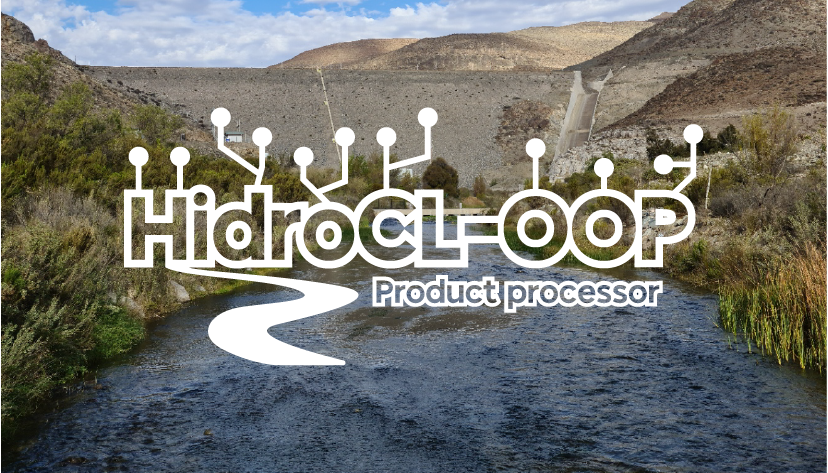

Welcome to HidroCL-OOP

What is HidroCL-OOP?
HidroCL-OOP is a Python library for downloading, pre-processing, and extracting hydrometeorological variables from satellite and climate reanalysis products, in order to build and maintain geospatial databases at the catchment scale for Chile.
The library integrates four main modules:
| Module | Description |
|---|---|
hidrocl.variables |
Management and querying of hydrometeorological variable databases |
hidrocl.download |
Download of satellite products and climate reanalysis data |
hidrocl.preprocess |
Pre-processing of raw data before extraction |
hidrocl.products |
Zonal statistics extraction per catchment |
Developed by the Universidad de Valparaíso and Universidad de La Serena, with funding from ANID through FONDEF IDeA I+D ID21i10093.
Supported products
| Category | Product | Class |
|---|---|---|
| Vegetation | MOD13Q1, VNP13Q1 | Mod13q1, Vnp13q1, Mod13q1agr, Vnp13q1agr |
| Snow | MOD10A1F, VNP10A1F, MOD10A2 | Mod10a1f, Vnp10a1f, Mod10a2 |
| Evapotranspiration | MOD16A2 | Mod16a2 |
| Land cover | MCD12Q1 | Mod12q1 |
| Leaf area index | MCD15A2H, VNP15A2H | Mcd15a2h, Vnp15a2h |
| Precipitation (observed) | GPM IMERG, IMERG GIS, PDIR-NOW | Gpm_3imrghhl, ImergGIS, Pdirnow |
| ERA5 reanalysis | ERA5 hourly | Era5, Era5ppmax, Era5pplen, Era5_pressure, Era5_rh |
| ERA5-Land reanalysis | ERA5-Land hourly | Era5_land |
| GFS forecast | GFS 0.25° | Gfs |
| GLDAS reanalysis | GLDAS Noah | Gldas_noah |
Installation
pip install git+https://github.com/MeteorologiaUV/HidroCL-OOP/
Requirements: Python ≥ 3.10
Configuration
Set project path
import hidrocl
hidrocl.set_project_path('/path/to/project')
Project directory structure
project/
├── base/
│ └── boundaries/
│ ├── Agr_ModisSinu.shp
│ ├── HidroCL_boundaries.shp
│ ├── HidroCL_boundaries_sinu.shp
│ ├── HidroCL_boundaries_utm.shp
│ ├── HidroCL_north.shp
│ └── HidroCL_south.shp
├── databases/
│ ├── forecasted/
│ └── observed/
├── logs/
├── pcdatabases/
│ ├── forecasted/
│ └── observed/
└── products/
└── observed/
Each shapefile must include a gauge_id column identifying the catchments.
Credentials
CDSAPI (ERA5/Copernicus) — ~/.cdsapirc:
url: https://cds.climate.copernicus.eu/api/v2
key: XXXXXXXXXXX
Earthdata (MODIS, VIIRS, GPM) — ~/.netrc:
machine urs.earthdata.nasa.gov
login XXXXXXXXXXX
password XXXXXXXXXXX
Environment variables — workflow/server/.env:
PROJECT_PATH=/path/to/project
DOWNLOAD_SCRIPT_PATH=/path/to/workflow/server
DOWNLOAD_LOG_PATH=/path/to/logs
Quick start
import hidrocl
import hidrocl.paths as hcl
# Enable automatic database creation
hidrocl.variables.create = True
# Create variables
ndvi = hidrocl.HidroCLVariable("ndvi",
hcl.veg_o_modis_ndvi_mean_b_d16_p0d,
hcl.veg_o_modis_ndvi_mean_pc)
evi = hidrocl.HidroCLVariable("evi",
hcl.veg_o_modis_evi_mean_b_d16_p0d,
hcl.veg_o_modis_evi_mean_pc)
nbr = hidrocl.HidroCLVariable("nbr",
hcl.veg_o_int_nbr_mean_b_d16_p0d,
hcl.veg_o_int_nbr_mean_pc)
# Extract MODIS vegetation indices
mod13 = hidrocl.Mod13q1(ndvi, evi, nbr,
product_path=hcl.mod13q1_path,
vector_path=hcl.hidrocl_sinusoidal,
ndvi_log=hcl.log_veg_o_modis_ndvi_mean,
evi_log=hcl.log_veg_o_modis_evi_mean,
nbr_log=hcl.log_veg_o_int_nbr_mean)
mod13.run_maintainer()
mod13.run_extraction()
Run the operational workflow
cd workflow/server/
python run_all.py # all satellite + reanalysis products
python run_gfs.py # GFS forecast (handles retries automatically)